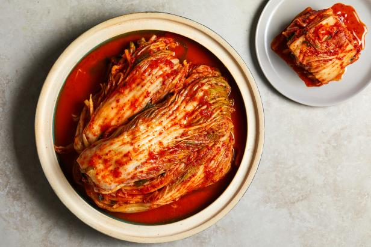

KIMCHI

INGREDIENTS
- 1 head of napa cabbage
- 1/2 cup of coarse sea salt
- 4 cups of water
- 1 tablespoon of grated garlic
- 1 tablespoon of grated ginger
- 1 tablespoon of sugar
- 3 tablespoons of fish sauce
- 1/2 cup of Korean chili flakes (gochugaru)
- 1 bunch of scallions, chopped
into 1-inch pieces
- 1/2 cup of julienned carrots
- 1/2 cup of julienned daikon radish
INSTRUCTIONS
- Cut the cabbage lengthwise into quarters, and then crosswise into 2-inch pieces.
- In a large bowl, dissolve the sea salt in water. Add the cabbage and toss to coat. Let it sit for 2
hours, tossing every 30 minutes.
- Rinse the cabbage thoroughly under cold running water and drain.
- In a separate bowl, mix together the garlic, ginger, sugar, fish sauce, and Korean chili flakes to
make a paste.
- Add the scallions, carrots, and daikon radish to the paste and mix well.
- Add the cabbage to the paste mixture and toss to coat.
- Pack the mixture into a large jar or airtight container, pressing down firmly to remove any air
pockets.
- Let it ferment at room temperature for 1-5 days, depending on how sour you like your kimchi.
- Store in the refrigerator and enjoy as a side dish or use it in cooking.